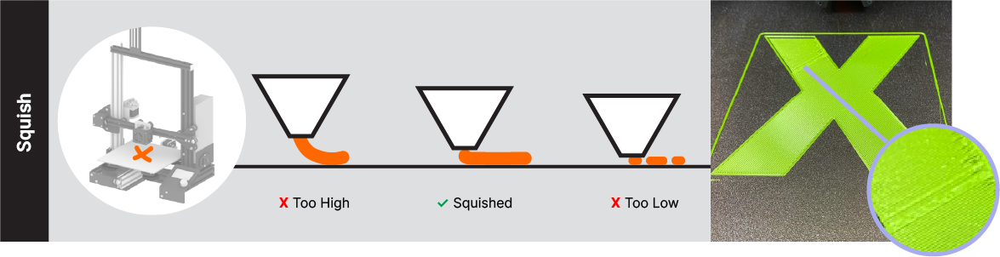
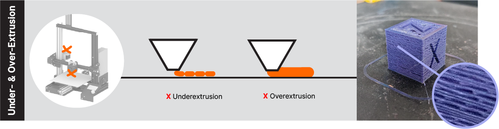

Blair Subbaraman and Nadya Peek, University of Washington
Slides: https://rb.gy/xuvkf
July 14, 2023
Promise vs. Practice
Promise vs. Practice
How do practitioners maintain their 3D printers?
Empirical Setting
Methods
| Participant | Experience (years) | FFF Printer(s) |
| P1 | 2.5 | Ender3 Pro |
| P2 | 0.5 | Artillery Genius, custom built coreXY |
| P3 | 1 | Ender3 Pro, Ender5, Dremel 3D20, Anet ET4 X |
| P4 | 2 | Ender3 Pro, Ender5, Anycubic i3 Mega, Creatlity CR-10 |
| P5 | 4 | Prusa i3 MK3S+ |
| P6 | 1 | Ender3 Pro, Creality CR-6 SE |
| P7 | 1 | Ender5, Ultimaker S5 |
| P8 | 0.5 | Ender3 |
| P9 | 1 | Monoprice Mini, Prusa i3 MK3S |
| P10 | 2 | Ender3 Pro, Prusa Mini |
| Participant | Experience (years) | FFF Printer(s) |
| P1 | 2.5 | Ender3 Pro |
Routines | Repairs | Refinements | Reconciliations
Routines
Practitioners ensure reliable fabrication outcomes with ad-hoc procedures
Practitioners ensure reliable fabrication outcomes with ad-hoc procedures
So like every five, six prints, you gotta take [the textured sheet] off and clean it. Like I mean, clean it... with soap and water and then scrub it off with alcohol and put it back.- P4
I pay particular attention to vibrations, and sort of resonant sounds of the printer itself. If I notice that the printer is vibrating quite a bit, and it’s almost acoustically amplifying the vibrations from the motors and whatnot. That usually tells me there might be something loose.- P5
Repairs
Practitioners gain confidence with machines through mechanical intervention
Practitioners gain confidence with machines through mechanical intervention
[My first printer was] just kind of a black box. I didn’t really understand what was going on inside.”- P9
Practitioners gain confidence with machines through mechanical intervention
You understand more what’s going on. And you get a little more confidence with the mechanics of the machine. I realized oh, the z-axis works by the motor turning this lead screw... And it’s just that simple.- P9
Refinement
Practitioners use tangible output to tune prints
Practitioners use tangible output to tune prints
Because you can usually tell like when you’ve been doing it for a while... if the layer’s going down right. If it’s squished just enough, if it’s not squished enough. If it’s like more squished on one side than the other.- P6 
Reconciliations
Practitioners negotiate digital software with physical practice
Practitioners negotiate digital software with physical practice
I noticed [the clog] because I gradually had more and more under-extrusion. Which at first was I guess totally fine in my eyes, because it never printed totally perfectly before... I tried all the things like settings in my slicer before I actually went for disassembling stuff, because it was also kind of scary. And it seemed like a lot of work. Now I know that it’s not that way. It’s quite easy, it just takes a couple of screws.- P1 
Key Takeaways
Blair Subbaraman and Nadya Peek, University of Washington
Slides: https://rb.gy/xuvkf
July 14, 2023